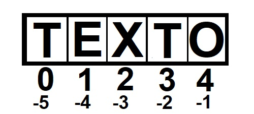

String nada mais é quem xero ou mais caracteres escritos entre aspas (simples, dupla ou crazes) que basicamente é usada para armazenar e manipular textos.
O primeiro problema que pode surgir é quando queremos inserir um texto e o mesmo já contém aspas duplas ou simples o que pode gerar um erro de onde começa ou termina de fato o valor da string. Para isso usamos um caractere especial chamado de escape que é uma barra invertida. Abaixo podemos ver uma maneira correta de escrever textos.
var texto1 = "Eu sou uma string sem aspas simples '' ";
var texto2 = 'Eu sou uma string sem aspas duplas "" ';
var texto3 = "Então eu tenho aspas duplas \"\" ";
var texto4 = 'Então eu tenho aspas simples \'\' ';
O caractere de escape ainda pode ser usado de outras formas, veja abaixo:
\': Insere uma aspa simples
\": Insere uma aspa dupla
\b: Espaço em branco
\n: Quebra de linha
\t: Tabulação horizontal
\v: Tabulação vertical
\: Usado para quebrar linhas longas de código sem perder a continuídade
String é um vetor de caracteres
Uma String é cista como um vetor de caracteres, como pode ser vista na imagem abaixo. Onde o primeiro caractere do vetor é a posição 0, o segundo a posição 1 e assim sucessivamente.

Vetor de caracteres
Tamanho de uma String
Para saber a quantidade de caracteres em uma string devemos usar a propriedade texto.length. Assim o método irá retornar um valor numérico com a quantidade de caracteres da variável String.
<div id="length"></div>
<script> var txt = "ABCDEFGH"; var tamanho = txt.length; document.getElementById("length").innerHTML = "Quantidade de letras em \"ABCDEFGH \" é : " + tamanho ;
</script>
Pesquisar uma palavra em uma String
indexOf()
Podemos pesquisar uma palavra em uma determinada string de três formas diferentes, a primeira usa o método texto.indexOf() que retorna a primeira posição da primeira letra da primeira em que há a igualdade entre as palavras.
<div id="indexOf"></div>
<script> var txt = "banana ovo farinha beijinho farinha"; var index = txt.indexOf('farinha'); document.getElementById("indexOf").innerHTML = "A posição da primeira ocorrência da palavra farinha no texto \"banana ovo farinha beijinho farinha\" é : " + index;
</script>
lastIndexOf()
A segunda forma de fazer pesquisa em uma string é através do método texto.lastIndexOf() que retorna a primeira posição da primeira letra da última palavra em que há a igualdade entre as palavras.
<div id="lastIndexOf"></div>
<script> var txt = "banana ovo farinha beijinho farinha"; var index = txt.lastIndexOf('farinha'); document.getElementById("lastIndexOf").innerHTML = "A posição da última ocorrência da palavra farinha no texto \"banana ovo farinha beijinho farinha\" é : " + index;
</script>
search()
A terceira forma de fazer pesquisa em uma string é através do método texto.search() que retorna a primeira posição da primeira letra da primeira palavra em que há a igualdade entre as palavras.
<div id="search"></div>
<script> var txt = "banana ovo farinha beijinho farinha"; var index = txt.search('farinha'); document.getElementById("search").innerHTML = "A posição da primeira ocorrência da palavra farinha no texto \"banana ovo farinha beijinho farinha\" é : " + index ;
</script>
Diferenças
E qual a diferença entre indexOF() e search()? A diferença é que as funções indexOF() lastIndexOf() possuem um segundo parâmetro que pode se especificado para iniciar a buscas a partir de uma determinada posição.
<div id="indexOf2"></div>
<script> var txt = "banana ovo farinha beijinho farinha"; var index = txt.indexOf('farinha',20); document.getElementById("indexOf2").innerHTML = "A posição da primeira ocorrência da palavra farinha no texto \"banana ovo farinha beijinho farinha\", a partir da posição 20 é : " + index;
</script>
Extrair texto de uma string
Quando queremos apenas uma parte de uma string e não a String por completo, estamos falando de substrings.
slice()
O método slice(posInicial, PosFinal) extraí parte de uma string retornado uma nova string com a parte extraída. o método requer dois parâmetros, a posição inicial e a posição final (não incluso) que queremos cortar a string.
<div id="slice"></div>
<script> var txt = "banana ovo farinha beijinho farinha"; var novoTxt = txt.slice(6,10); document.getElementById("slice").innerHTML = "O texto extraído da frase \"banana ovo farinha beijinho farinha\" é : " + novoTxt;
</script>
Podemos também omitir a posição final para cortar até o último caractere do texto.
<div id="slice2"></div>
<script> var txt = "banana ovo farinha beijinho farinha"; var novoTxt = txt.slice(6); document.getElementById("slice2").innerHTML = "O texto extraído da frase \"banana ovo farinha beijinho farinha\" é : " + novoTxt;
</script>
Ainda podemos usar valores negativos para pegar a partir do final da string, como pode ser vista na imagem de vetores de string no início.
<div id="slice3"></div>
<script> var txt = "banana ovo farinha beijinho farinha"; var novoTxt = txt.slice(-28, -25); document.getElementById("slice3").innerHTML = "O texto extraído da frase \"banana ovo farinha beijinho farinha\" é : " + novoTxt;
</script>
substring()
O método substring(posInicial, Posfinal) é semelhante o método slice(), entretanto não recebe parâmetros negativos!
<div id="substring"></div>
<script> var txt = "banana ovo farinha beijinho farinha"; var novoTxt = txt.substring(6,10); document.getElementById("substring").innerHTML = "O texto extraído da frase \"banana ovo farinha beijinho farinha\" é : " + novoTxt;
</script>
substr()
O método substr(posInicial, tamanho) tem como parâmetro a posição inicial que queremos cortar e o tamanho da string que deve ser extraída do texto.
<div id="substr"></div>
<script> var txt = "banana ovo farinha beijinho farinha"; var novoTxt = txt.substr(6,3); document.getElementById("substr").innerHTML = "O texto extraído da frase \"banana ovo farinha beijinho farinha\" é : " + novoTxt;
</script>
replace() : Substituição de palavras
O método txt.replace("antigo", "novo") recebe dois parâmetros do tipo string, onde o primeiro parâmetro é a palavra que você quer substituir e o segundo é por qual palavra você quer substituir. Entretanto o método não substitui a nova palavra no texto original, mas sim retorno uma nova string com a nova palavra.
<div id="replace"></div>
<script> var txt = "banana ovo farinha beijinho farinha"; var novoTxt = txt.replace("farinha", "queijo"); document.getElementById("replace").innerHTML = "A frase original é \"banana ovo farinha beijinho farinha\" e foi alterada para : " + novoTxt;
</script>
O método é case sensitive, ou seja, diferencia letras maiúsculas e minúsculas e altera somente a primeira ocorrência da palavra. Entretanto com expressões regulares podemos alterar mais palavras ao mesmo tempo.
toUpperCase() e toLowerCase() : String maiúsculas ou minúsculas
Para deixar uma string em letras maiúsculas devemos usar o método texto.toUpperCase(), enquanto o método texto.toLowerCase() é usado para deixar a string com letras minúsculas. Lembrando que o método não altera o valor da string original, apenas retorna uma nova string que deve ser armazenada ou sobrescrever a variável da string anterior.
<div id="toUpperCase"></div>
<script> var txt = "Banana Ovo Queijo"; var novoTxt = txt.toUpperCase(); document.getElementById("toUpperCase").innerHTML = "A frase original é \"Banana Ovo Queijo\" e foi alterada para : " + novoTxt;
</script>
<div id="toLowerCase"></div>
<script> var txt = "Banana Ovo Queijo"; var novoTxt = txt.toLowerCase(); document.getElementById("toLowerCase").innerHTML = "A frase original é \"Banana Ovo Queijo\" e foi alterada para : " + novoTxt;
</script>
concat() : Unindo duas ou mais string.
O método texto.concat("texto2","texto3",...) é usado para unir dois ou mais textos.
<div id="concat"></div>
<script> var txt = "Banana Ovo Queijo"; var txt2 = "Feijão Goiaba"; var novoTxt = txt.concat(" unindo com ", txt2 ); document.getElementById("concat").innerHTML = "A frase original é '" + txt + "' e foi unida com a frase '" + txt2 + "': " + novoTxt;
</script>
A forma mais simples de unir duas string é através do operador de soma texto1 + texto2 que irá somar uma string na outra.
<div id="concat"></div>
<script> var txt = "Banana Ovo Queijo"; var txt2 = "Feijão Goiaba"; var novoTxt = txt + "unindo com " + txt2; document.getElementById("concat").innerHTML = "A frase original é '" + txt + "' e foi unida com a frase '" + txt2 + "': " + novoTxt;
</script>
trim() : Limpando textos
O método texto.trim() é usado inicialmente para remover espaços em branco que estão sobrando em um texto. Também pode ser usada um expressão regular para limpar outros caracteres.
<div id="charAt"></div>
<script> var txt = "Obrigado!"; var caractere = txt.charAt(3); document.getElementById("charAt").innerHTML = "A letra da posição 3 da frase '" + txt + "' é : " + caractere;
</script>
charCodeAt(): Valor Unicode de um Caractere
O método texto.charCodeAt(posição) retorna o valor da tabela unicode do caractere da posição especificada. ver mais sobre a Tabela Unicode.
<div id="charCodeAt"></div>
<script> var txt = "Obrigado!"; var caractere = txt.charCodeAt(3); document.getElementById("charCodeAt").innerHTML = "O valor da letra da posição 3 da frase '" + txt + "' é : " + caractere;
</script>
propriedade [] : Propriedade de acesso
Podemos usar a propriedade do ECMAScript 5 para acessar um string como um vetor. Basicamente devemos usar a sintaxe texto[posição] para retornar o caractere.
<div id="propriedadeAcesso"></div>
<script> var txt = "Obrigado!"; var caractere = txt[3]; document.getElementById("propriedadeAcesso").innerHTML = "O valor da letra da posição 3 da frase '" + txt + "' é : " + caractere;
</script>